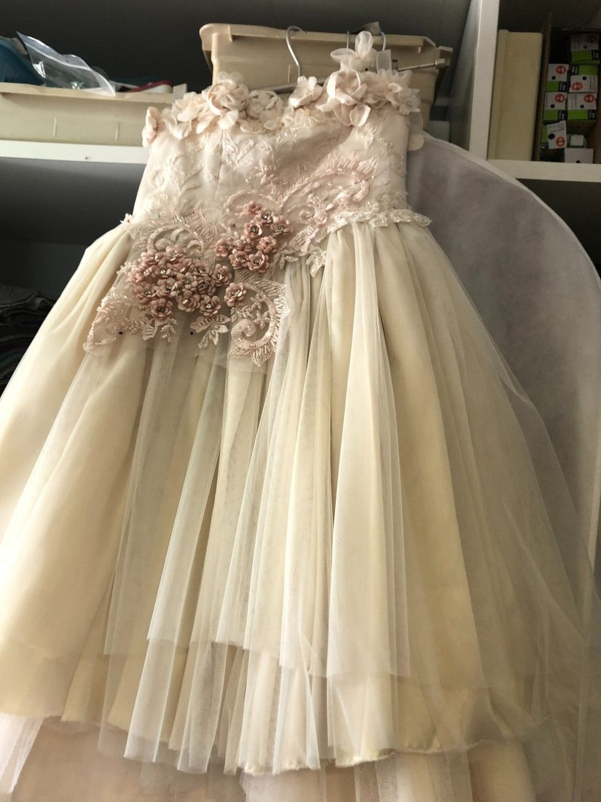
Kleding & maatwerk
Reparaties, inkorten, innemen en ritsen vervangen. En dames-, heren- en kindermaatconfectie.
Reparatie · maatconfectieMeer info
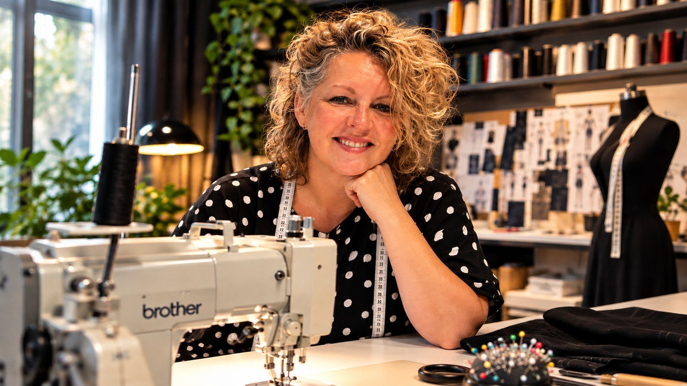
Kledingreparatie, maatwerk, stoffering en raambekleding uit ons eigen atelier in Oosterhout. Met persoonlijk advies, bij ons in het atelier of bij u thuis.
Van een nieuwe rits tot een complete raam make-over. Alles wordt op maat gemaakt in ons eigen atelier.

Reparaties, inkorten, innemen en ritsen vervangen. En dames-, heren- en kindermaatconfectie.
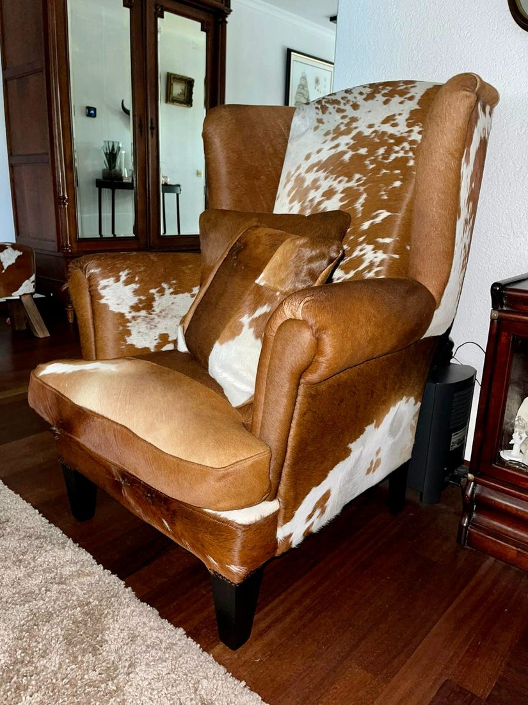
Stoelen en fauteuils voor binnen en buiten, en kussens opnieuw gevuld met schuim op maat.
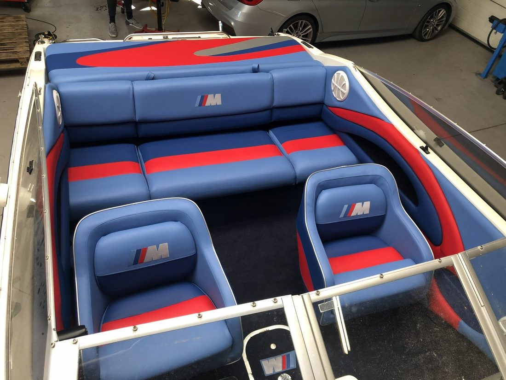
Complete interieurs van boten, jachten en auto's, gestoffeerd naar uw eigen ontwerp.
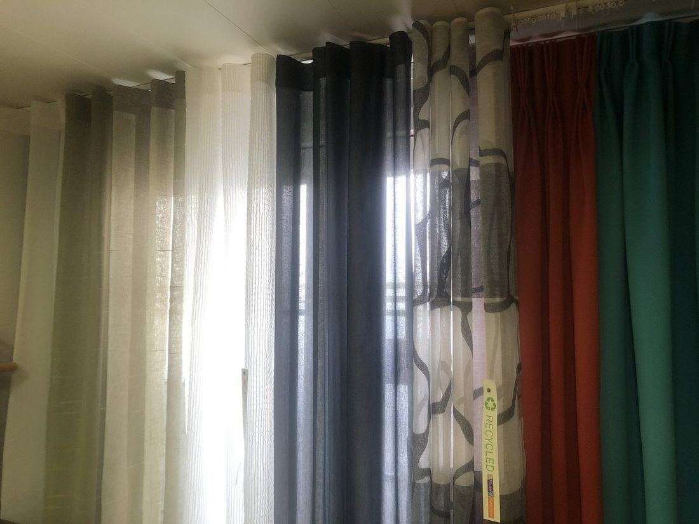
Verduisterende gordijnen, inbetweens en jaloezieën. We adviseren, meten en monteren.
"Als iets niet kan, dan vertellen wij u dit ook."
Eerlijk en passend advies, ook als dat betekent dat we iets afraden. Pas als u tevreden bent, zijn wij het ook.
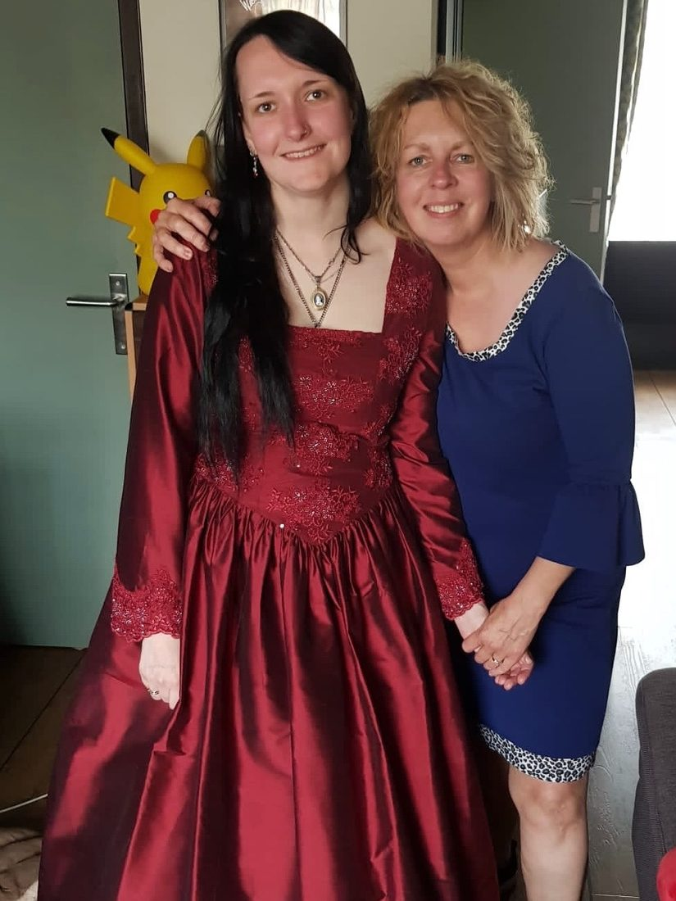
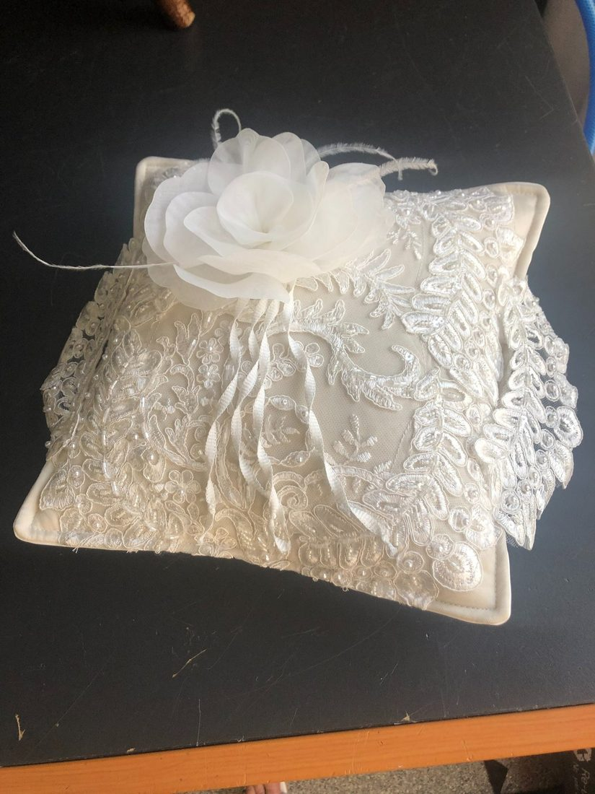
We vermaken uw bruidsjurk, passen een bestaand ontwerp aan of maken iets unieks. Ook voor communie- en feestkleding bent u welkom.
Lian is daarnaast zelfstandig trouwambtenaar (BABS). Ze leert jullie vooraf kennen en maakt van het jawoord een persoonlijke ceremonie, binnen heel Brabant.
Een greep uit het werk dat de afgelopen tijd het atelier uit ging.
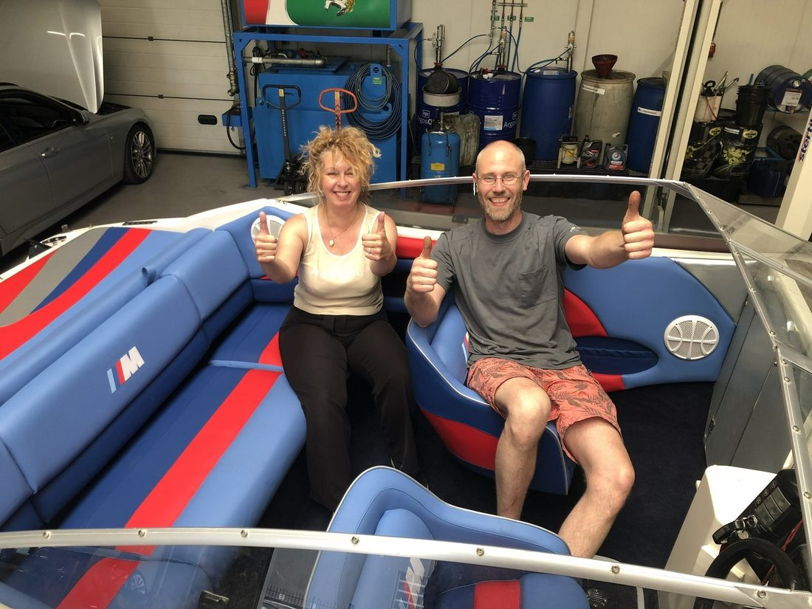
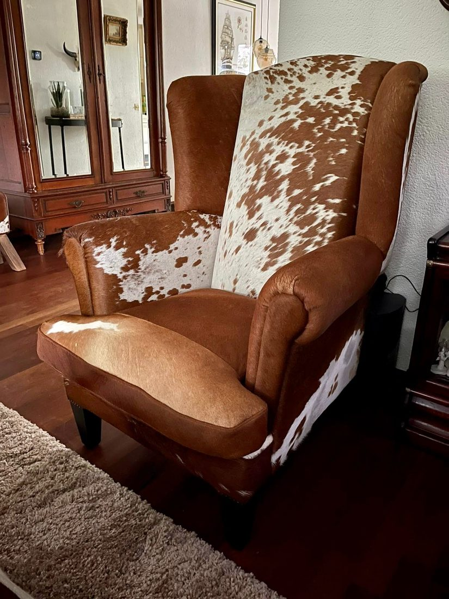
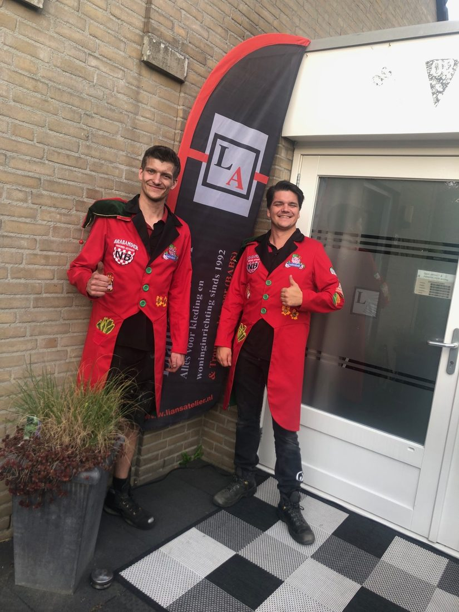
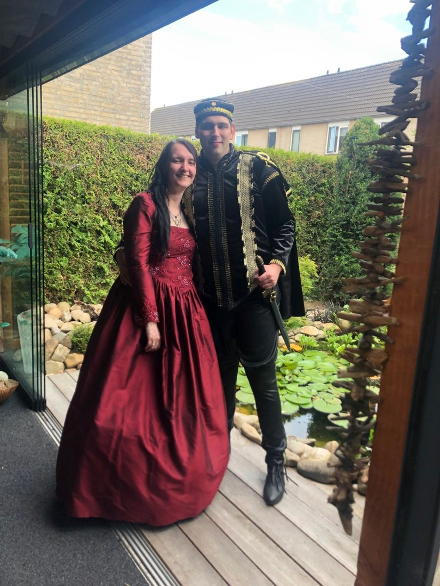
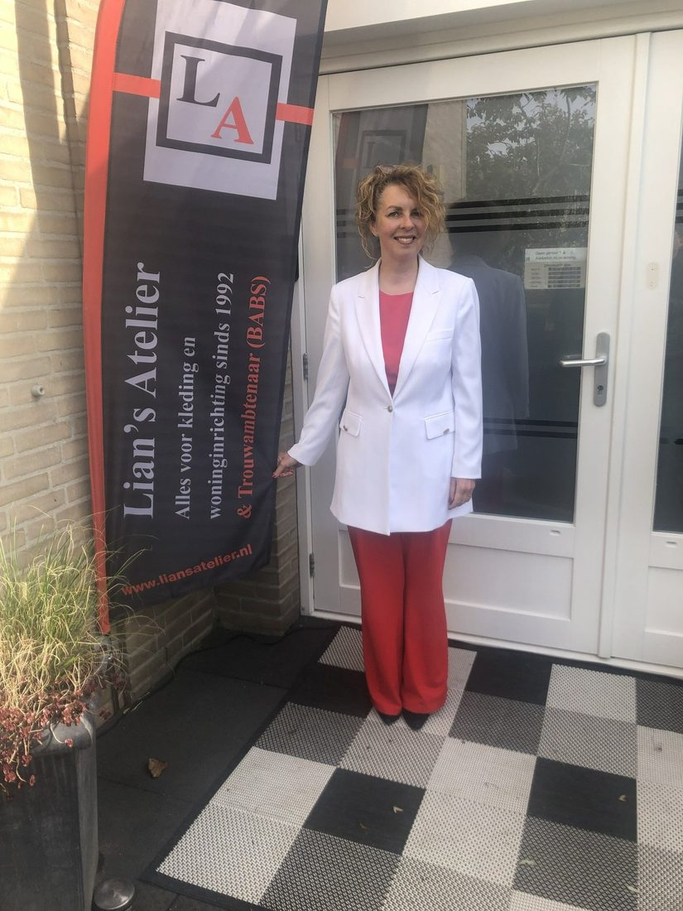
Mijn naam is Lian. Al van jongs af aan heb ik een grote liefde voor stoffen, naald en draad. Wat begon als hobby, is uitgegroeid tot een professioneel atelier waar ik elke dag met mijn vak bezig ben.
Door de jaren heen heb ik me gespecialiseerd in bruidskleding, maatconfectie, meubelstoffering en raamdecoratie. Ik vind het belangrijk om goed te luisteren naar uw wensen, zodat we samen tot een resultaat komen dat bij u past.
Het atelier is open op afspraak, maandag tot en met vrijdag van 9:00 tot 17:00. Laat weten waarmee we u kunnen helpen.
Stuur gerust een foto van uw kledingstuk, meubel of raam mee, dan denken we direct mee.